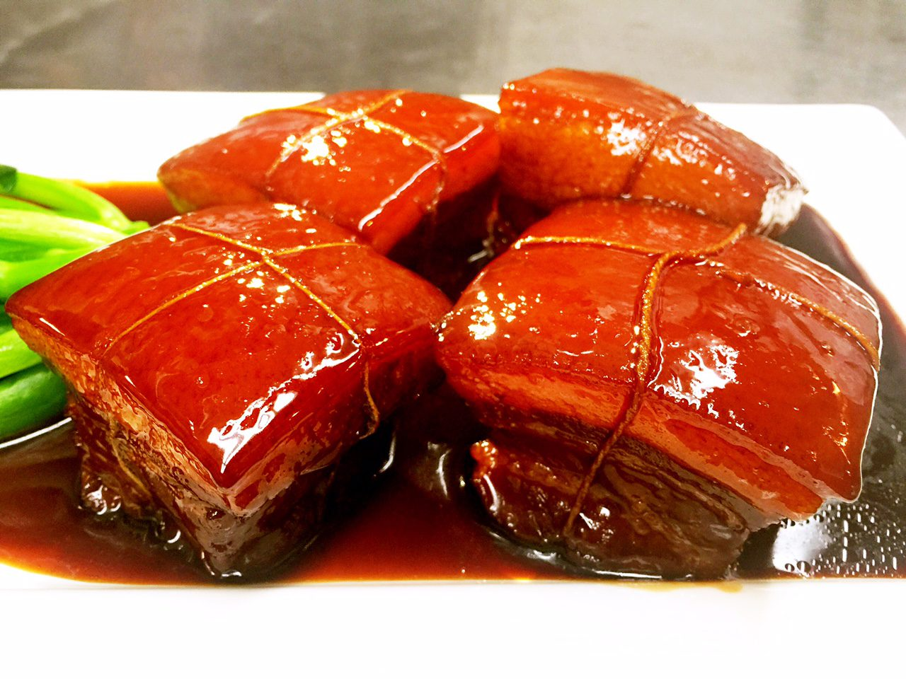

Dong Po Recipe

Description
Dong Po named after an ancient Chinese statesman, poet and gourmand of the Song Dynasty,
the pork belly is cooked three different ways, rendering the meat succulent, tender
and very flavorful. (If you can't find pork belly, ask the butcher; it is what bacon
is before it is cured and sliced.)
Ingredients
- 1 pound raw pork belly
- 3 tablespoons vegetable oil
- ¼ cup light soy sauce
- ¼ cup dark soy sauce
- ½ cup Chinese rice cooking wine
- 3 ½ ounces Chinese rock sugar
- 1 (1 inch) piece fresh ginger, peeled and grated
- 8 spring onions, sliced
Steps
- Slice the pork belly into 2-inch wide strips. Bring a large pot of
water to a boil, and stir in the pork slices; reduce heat to a simmer,
and cook the meat for 10 minutes. Remove from the water, and blot dry
with paper towels.
- Heat the vegetable oil over medium-high heat in a large wok, and brown
the pork strips well on all sides. Pork will splatter - use a splatter
shield for this step.
- While pork is browning, mix together the light soy sauce, dark soy sauce,
rice wine, rock sugar, ginger, and spring onions in a large soup pot or stockpot.
Bring the mixture to a boil, stirring to dissolve the sugar. Reduce heat to a gentle simmer,
and lay the pork strips into the liquid. Cover, and simmer until the meat is very tender,
1 1/2 to 2 hours. Add water as needed to keep the liquid from going completely dry.
Back to Main